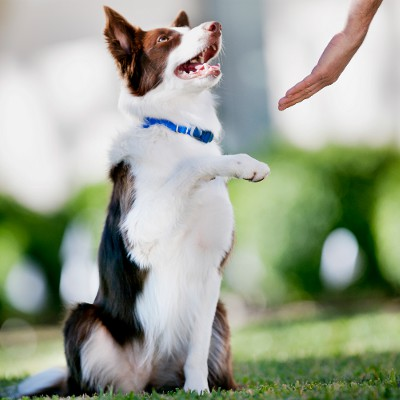

So that other perple can see how great it is to have a pet in your home. That loves you no matter what. Having a pet in your life could be a way to show you a new and happy life.
This site is designed for a Animal loving audience in mind, and is aimed toward individuals that have the time to care and love for a new pet in there life. My target audience will be loving and caring families, single and in need of a companion.
To try and find homes for loving and caring animals that need a loving and caring home. That need to be adopted.
AdoptProof that dogs are man's best friend "Man's best friend" is a common phrase about domestic dogs, referring to their millennia-long history of close relations, loyalty, and companionship with humans. The first recorded use of a related phrase is by Frederick the Great of Prussia.
Often when we think of friendship, the word loyalty comes to the forefront as a very important and desired character trait in a friend. A loyal friend is a friend who never lets you down. I think that a story about friendship cannot be without a story about man’s most loyal and trusted friend—the dog!
If you love dogs, you're like many of us who feel like we can't live without them. That's not surprising, considering dogs have been companions to humans for the past 30,000 years. If You Give a Dog a Bone
Scientists believe this very special relationship started when packs of ancient wolves began hanging around human encampments looking for scraps of meat. Obliging humans decided to share some of the kill with these wolves, unwittingly teaching them to beg. Over time, the relationship between the two species blossomed and became more than casual. Humans and dogs became friends. DNA evidence suggests the first bond between wolves and humans forged in southeastern Asia. When the glacial period ended about 15,000 years ago, now-domesticated canines spread to the Middle East and Africa, following humans as they migrated in search of game and new territories. Within five thousand years, domestic dogs were present across all of Europe.
Many years later, in the 15th century, European travelers first arrived in the New World and discovered that native populations throughout the two continents kept dogs as companions. Some nomadic groups in North America even used dogs as work animals, pulling their belongings in travois. Over the past few hundred years, domestic dogs became more like partners to humans. They developed into different types, depending on where they lived. In cold climates, dogs became athletes that could pull sleds over miles of snow-covered terrain. In farming areas, they learned to gather and protect livestock. In towns, and rural communities alike, they honed their rodent catching skills. The noble gentry used them to track and chase down game, while settlers trained them to retrieve shot birds.
As dogs developed different jobs, they began to take on unique physical characteristics. Farm dogs in northern climates developed thick undercoats. Hunting dogs in Eastern Europe became lean and fleet. Dogs whose job it was to kill vermin developed the drive to dig and hunt underground. Over time, hundreds of breeds were created, leaving us with the beautiful and distinctive dogs we have today.
One canine still exists today that can remind us of the early dog that developed from wolves so many years ago: the dingo. Known for being Australia's wild dog, the dingo is believed to have migrated to the land down under from Asia some 4,000 years ago. Close genetic relatives of the Australian dingo still live in Asia, where they hunt in small packs and often scavenge food from humans, just as they did centuries ago. In Australia, dingoes were the companions of the Aboriginal peoples when the Europeans first arrived on the continent. Today, they live wild in the outback and in Australian zoos. Dingoes are able to breed with domestic dogs, and can be viewed as a link between the ancient wolf and the dogs with live with today. The domestication of the dog was one of the best things to ever happen to human beings. Whether dogs are partners working with us in the field or companions just snoozing next to us on the couch, they are clearly one of the best things about life.